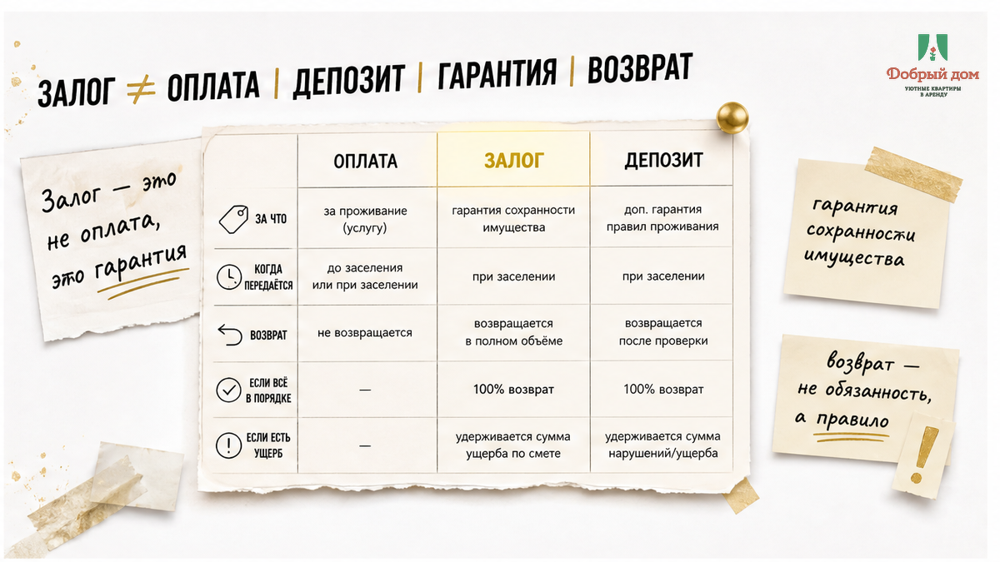
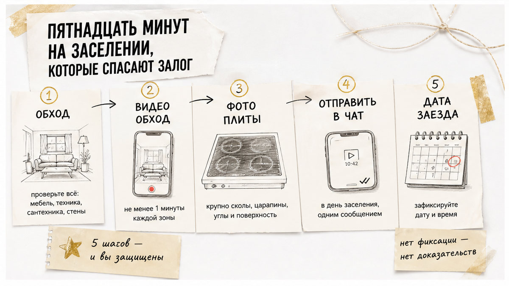
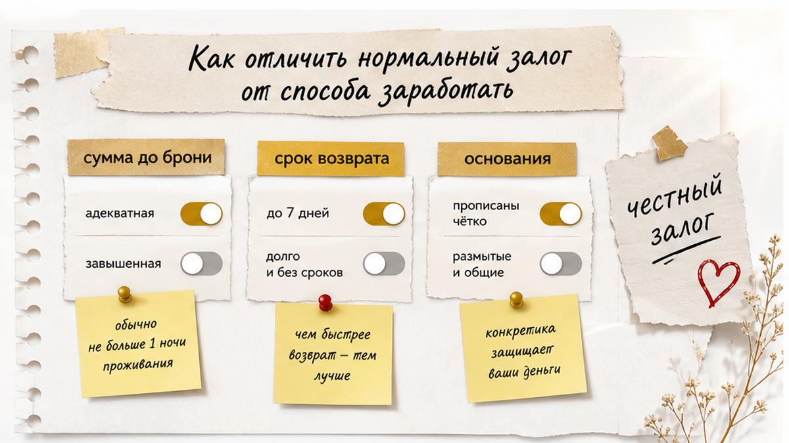
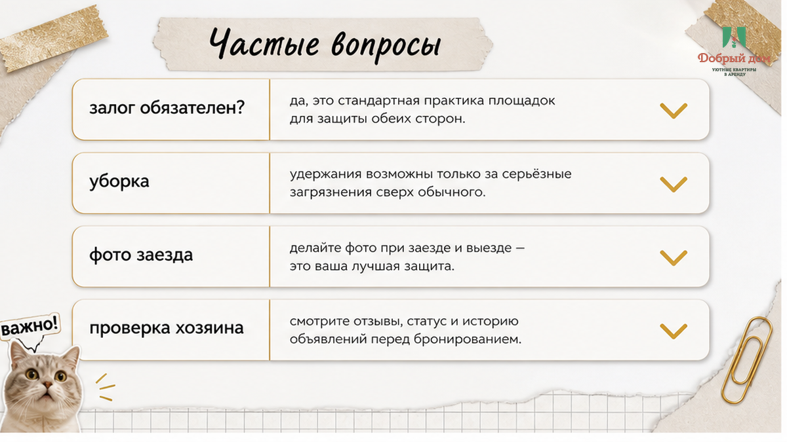

Сдал ключи, вышел с чемоданом, а через час в телефоне: «Залог не возвращаем — на плите скол». Фото крупным планом, ракурс такой, что не поймёшь, ваша это кухня или нет. Вы точно не роняли крышку. Но при заселении плиту не снимали — и доказать нечем.
Вот где вас подставляют чаще всего. Не кража и не «хозяин пропал». Скол на стеклокерамике — и пять–семь тысяч, которые вы уже мысленно потратили.
Я сдаю квартиры посуточно в Тюмени, залог беру сам. Покажу, что сделать на заселении за пятнадцать минут — и что писать, если деньги уже держат.

Залог — это деньги, которые лежат «в заморозке», пока вы живёте. Выехали, всё целое — деньги вернулись. Полностью.
Это не доплата за проживание. Не «сервисный сбор». Не уборка. Уборка обычно уже в цене — или отдельной строкой, и тогда она не залог.
Зачем он хозяину? Всё просто. Квартира сдаётся на одну-две ночи. Хозяин видит гостя первый раз в жизни. За ночь можно прожечь столешницу, залить соседей, увезти с собой фен и утюг. Залог — это способ не проверять каждого человека на прочность и при этом не поднимать цену для всех.
Нормальные суммы для Тюмени — примерно от трёх до пяти тысяч рублей. Для дорогих квартир с техникой и хорошим ремонтом бывает больше. Если просят залог размером в две-три стоимости суток — это уже не гарантия, это способ подержать ваши деньги.
Главное правило: сумма залога, срок возврата и способ возврата должны быть известны до того, как вы забронировали. Не на пороге.
Стеклокерамика бликует — скол на фото видно только под углом. Гость снимает кровать, душ, Wi‑Fi, а плиту почти никто. Она чистая, белая, «ну что с ней будет».
Скол при этом бывает по-настоящему: уронили крышку, поставили горячее на холодное стекло. Претензия выглядит правдоподобно. Сумма удобная — ровно залог, и из другого города спорить лень.
Тот же приём — душевое стекло, дверца духовки, столешница. Плита просто лидер по спорам.

Почти все споры по залогу — это спор о том, был скол до вас или после. И выигрывает тот, у кого есть фото со временем.
Поэтому не бросайте чемодан и не падайте в душ. Сначала обход. Пятнадцать минут — и вы спокойны до самого выезда.
Как делать. Включаете видео на телефоне и молча идёте по кругу: коридор, комната, кухня, санузел. Проговариваете вслух, что видите. «Плита, вот тут скол на эмали справа». «Столешница, вот царапина у мойки». Видео с голосом весит немного, а работает как протокол.
Что снять обязательно:
И последний шаг, который забывают все: отправьте это хозяину в чат. Одним сообщением. «Заселился, вот обход, вот что уже было». Всё. Теперь у вас двоих одна версия событий, и она в переписке с датой.
Особенно это важно при бесконтактном заселении: ключа на месте, встречи нет — чат с хозяином единственный свидетель.
Мы этот список постоянно дополняем — гости подсказывают то, до чего сами не додумались. Полный чек-лист заселения — в нашем канале: t.me/Dobriy_dom_72. Сохраните перед поездкой.
Коротко, вежливо, письменно. Четыре сообщения по порядку:
Больше половины споров заканчиваются на втором или третьем — когда просят документ, а его нет.
Тут главная подмена, на которой теряют деньги.
Вы уронили кастрюлю, на стеклокерамике скол. Хозяин пишет: «Плита новая стоит сорок тысяч, залог не возвращаю, ещё и доплатите».
Так не считается. Считается по-другому.
Первое: ремонт, а не замена. Если вещь можно починить — считают починку. Скол на столешнице заделывают, шланг меняют, стекло на дверце ставят новое. Менять всю плиту из-за одного скола никто не обязан.
Второе: износ. Плите семь лет, она отработала своё. Её остаточная стоимость — не цена из магазина. Стиральная машина, которая уже шумит и подтекает, стоит не как из коробки.
Третье: естественный износ — не ущерб. Потёртая ручка, скрипнувшая дверь, полотенце, которое село после сотой стирки — это жизнь квартиры, а не ваша вина. Вы платили за проживание, а проживание оставляет следы.
Четвёртое: чеки. Удержали из залога — покажите, за что. Фото повреждения, расчёт, чек или счёт от мастера. «Ну ты же понимаешь» — это не расчёт.
И честно, с другой стороны стола: если вы правда что-то сломали — скажите сразу. Не молчите до выезда. Хозяин, которому написали «извините, разбил кружку и поцарапал столешницу, давайте решим», почти всегда считает мягче, чем хозяин, который нашёл это сам через час после вашего отъезда.
Бывает и так: выехали чисто, а деньги висят. Или удержали половину «за уборку», хотя уборка была в цене.
Действуйте по порядку, не прыгайте через ступени.
Шаг первый — спокойное письменное требование. В тот же чат, где бронировали. Без эмоций: даты проживания, сумма залога, что и когда вернули, что должны. Приложите обход при заселении и фото при выезде. Попросите расчёт удержания. Половина историй заканчивается здесь — человек понимает, что у вас всё зафиксировано, и переводит деньги.
Шаг второй — площадка бронирования. Если бронировали через сервис, пишите в поддержку. У площадок есть свои механики споров, и им невыгодно держать хозяев, которые «забывают» вернуть залог. Приложите ту же переписку.
Шаг третий — банк. Если платили картой и услугу не оказали или сумму списали без оснований, есть смысл поднять вопрос через банк. Позвоните на горячую линию своего банка и спросите про оспаривание операции. Сроки там ограничены, поэтому не тяните месяц.
Шаг четвёртый — формальный путь. Он есть, и он работает, но до него доходят единицы: потратите больше времени, чем стоит залог. Поэтому вся сила — в первых трёх шагах и в тех пятнадцати минутах при заселении.
Проще всего вообще не попадать в эту историю. О том, как её увидеть заранее — дальше.

Всё видно из переписки. До оплаты. Задайте три вопроса — и картина сложится.
Спросите: «Какая сумма залога?», «Когда возвращаете?», «Как возвращаете — на ту же карту?»
Хороший ответ звучит так:
А тут стоит остановиться:
Если видите два-три пункта из второго списка — не спорьте и не воспитывайте. Просто поищите другой вариант. В Тюмени квартир хватает.
Мы не идеальные и не самые дешёвые. Мы просто стараемся, чтобы у гостя не было неприятных сюрпризов.
Сумму залога вы узнаёте до брони, а не в подъезде. Если залог по квартире есть — он назван цифрой, и она не меняется по дороге.
Условия — в договоре. Что считается ущербом, что естественным износом, когда возвращаем. Всё коротко, без страниц мелким шрифтом.
При заселении мы сами просим сделать обход и скинуть нам видео в чат. Не для контроля, а чтобы потом никто ничего не додумывал. Если что-то уже было не в порядке — пишем это сразу, при вас.
Возврат — в день выезда, тем же способом, каким платили. За потёртости, скрип двери и одно пятно на полотенце мы не удерживаем ничего. За реально сломанное считаем по ремонту и с учётом износа, и показываем расчёт.
Квартиры у нас — комфорт: чисто, тепло, работающая техника, нормальные матрасы и полотенца. Без золотых кранов, но и без «ой, а стиральная машина у нас капризная».
Напишите нам до заезда — и мы заранее пришлём условия по залогу и памятку по заселению. Так спокойнее и вам, и нам. Мы на связи в MAX: max.ru/id660300569233_biz — или напрямую менеджеру в телеграм: t.me/Dobriy_dom_Tyumen.

Нет. Это условие договора. Хозяин может его брать, может не брать. Но если берёт — он должен назвать сумму и условия до вашей оплаты, а не после.
Если уборка входит в стоимость — нет. За обычный бытовой беспорядок после проживания удерживать нечего. Другое дело, если после вас нужна не уборка, а спецработы: вывести пятно с матраса, отмыть стены, убрать за животным, которого не согласовали. Тогда это уже отдельные расходы, и на них должен быть расчёт.
Скажите сразу. Считаться должно по ремонту, а не по цене новой вещи из магазина, и с учётом того, сколько эта вещь уже прожила. Попросите чек или счёт от мастера — это нормальная просьба, а не недоверие.
Нормально — в день выезда. Допустимо — один-два дня, если возврат идёт на карту и банк тянет. «В течение месяца» — не норма, и об этом стоит спросить ещё до брони.
Не опасно, если есть расписка или хотя бы сообщение в чате: «получил залог 4000 рублей, дата». Опасно — когда наличные, без бумаги и без переписки. Тогда доказать факт передачи почти нечем.
Имеете полное право не платить то, чего не было в условиях. Спокойно скажите: «В брони этого не было, давайте по договорённости». Если начинается давление — лучше уехать, чем оставлять деньги человеку, который уже начал с обмана.
Залог — это не поборы. Это страховка от того, что вы никогда не встретитесь снова. Плохо не когда залог есть, а когда про него молчат до последней минуты.
Спросите сумму заранее. Сделайте обход за пятнадцать минут. Скиньте видео хозяину. Всё, вы защищены.
А если хочется просто приехать и не думать об этом — приезжайте к нам. Забронируйте на сайте, каталог — на добрыйдом-72.рф, либо позвоните: +7 993 574-83-22. Расскажем про залог честно, ещё до того как вы переведёте первый рубль.